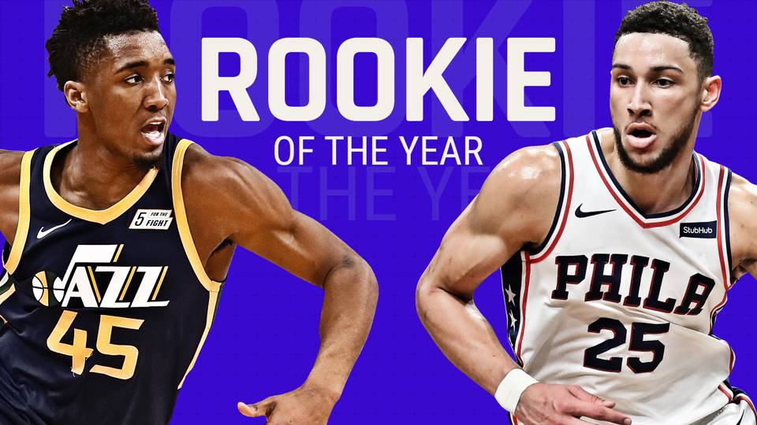

Donovan Mitchell will be ROTY
This website is explaing why Donovan Mitchell will be ROTY. This website will only be facts on why Donovan Mitchell should win over Ben Simmons. It will show comparision of there exact stats as a Rookie to see who have the advantage to win the award. We are also going to break down there diffrences as players and there expetation for there rookie year.
